sal(t) collective
sal(t) collective
sal(t) collective
sal(t) collective
We are two diasporic artists linked by the connective tissue of waters. We were raised by the Indian ocean, the Pacific Coast of the Choco region and the Philippine Sea. We are moved by song as living prayer, the protection of life and the honouring of death in its right time. We know we are land(s) who rise to keep singing.
mediums: sound. presence. skin. sculpture.

Azul Carolina Duque: was born and raised in Colombia, between the Andes mountains and the Pacific coast of Latin America, Azul plays and learns through the art-life practices of music composition, clowning, facilitation, grief-tending, and performance. As a former member of the Gesturing Towards Decolonial Futures collective, she is drawn to the questions that surface as modern certainties fray, and to the forms of care, presence, and honesty needed in collapsing times. She holds a Master’s degree in Society, Culture, Politics and Education from the University of British Columbia.
Kyra Royo Fay: is a Filipina-American multi-undisciplinary artist, educator, and facilitator living on the unceded territories of the Lək̓ʷəŋən and W̱SÁNEĆ Nations. Born and raised in the archipelago of Indonesia, her work is shaped by the textures of diasporic identity, ecological kinship, and ancestral entanglement. She is deeply committed to water as connective tissue, land as kin, and art as a way to host tensions that don’t necessarily resolve, but instead open space for complexity, grief, love, and contradictory truths to coexist. Her practice spans performance, and arts-based facilitation, often grounded in community settings and land based inquiry.
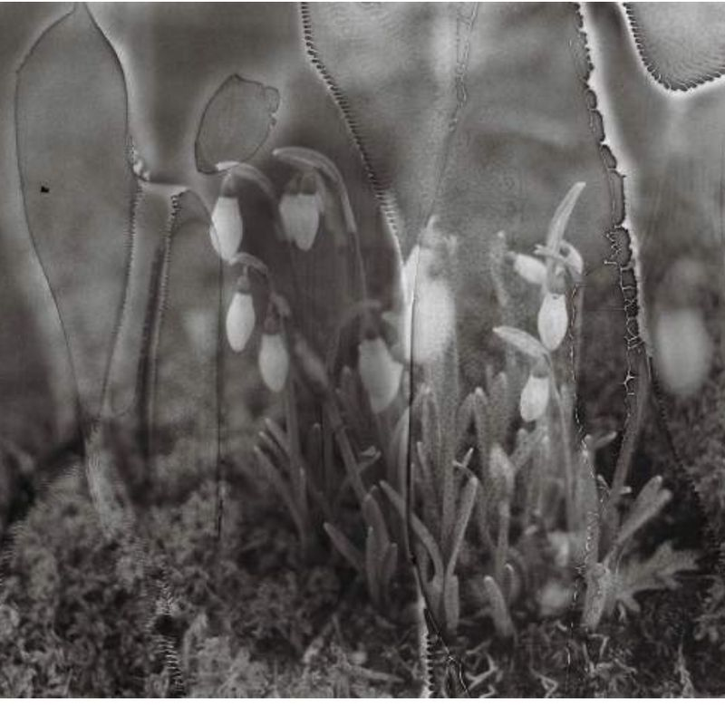
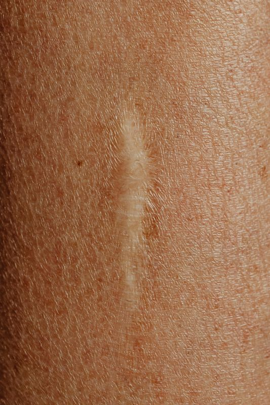
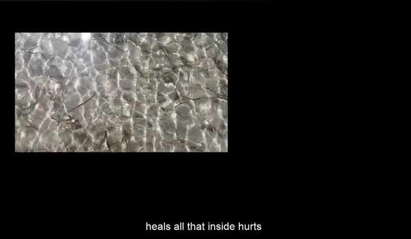
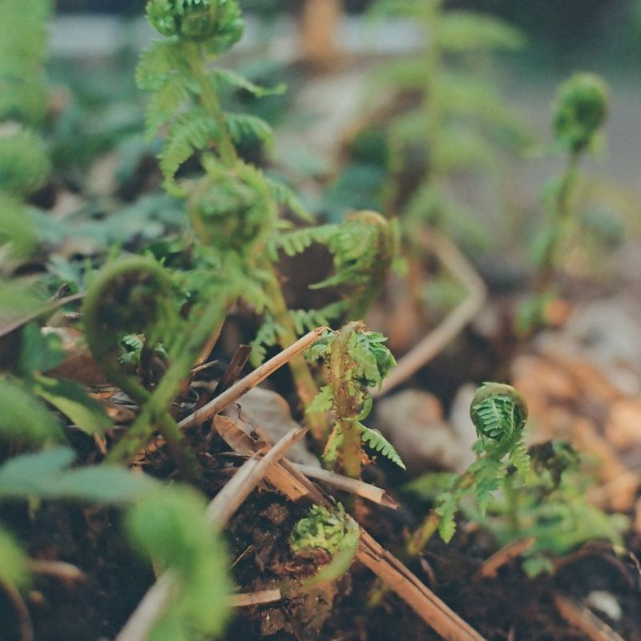
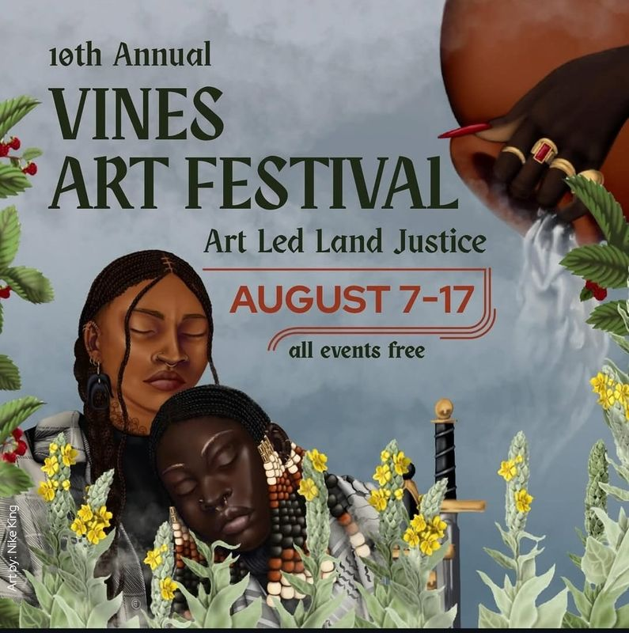
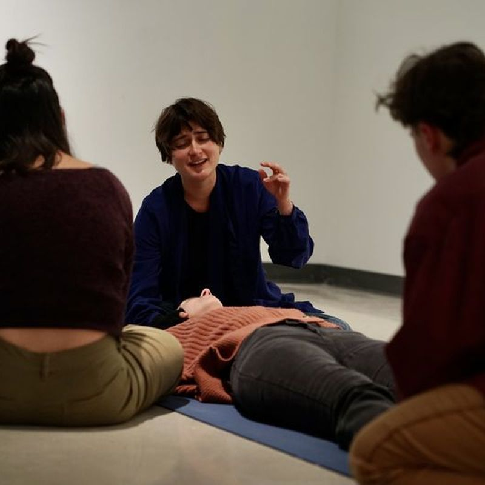
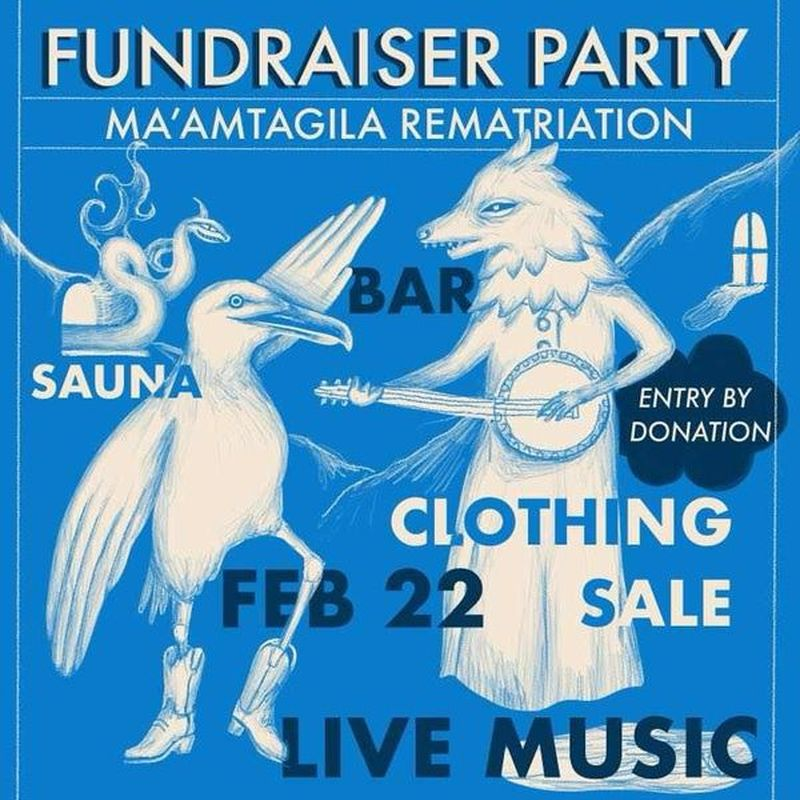
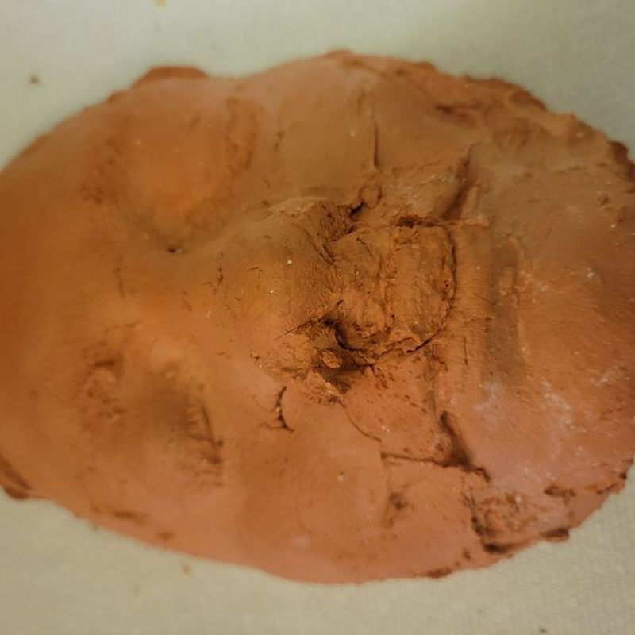
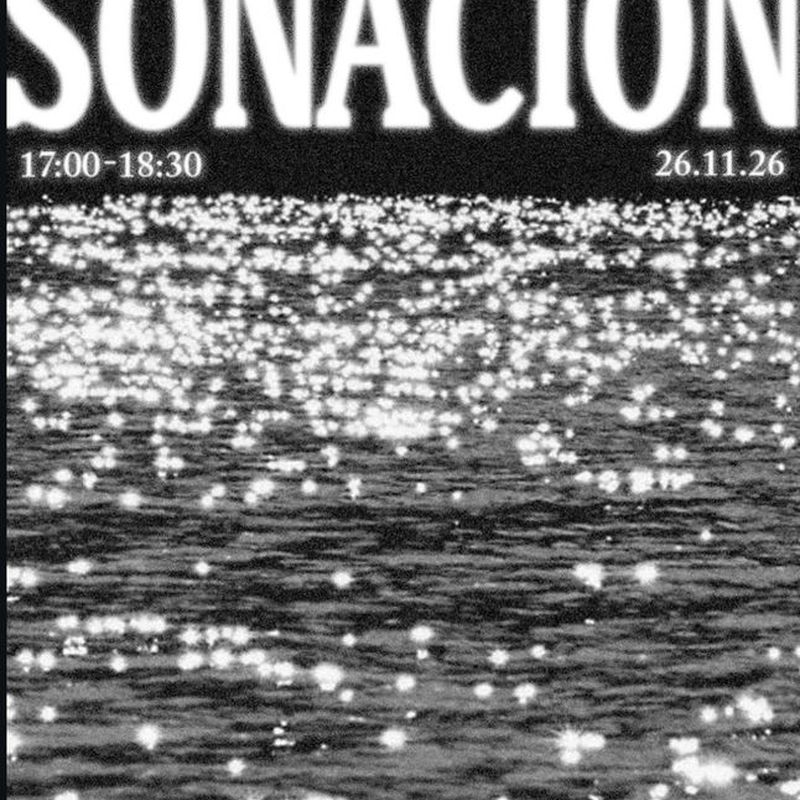
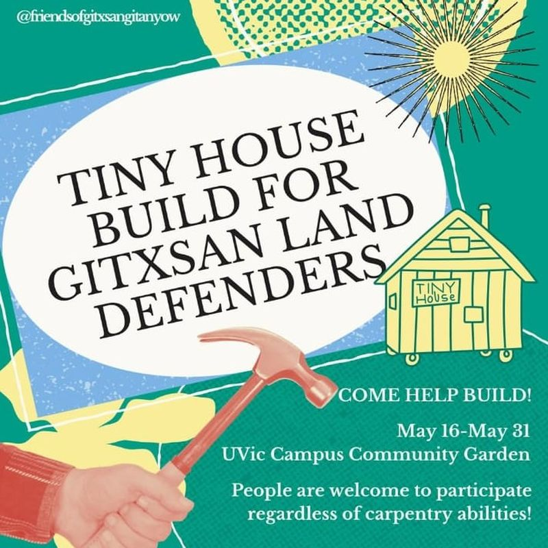
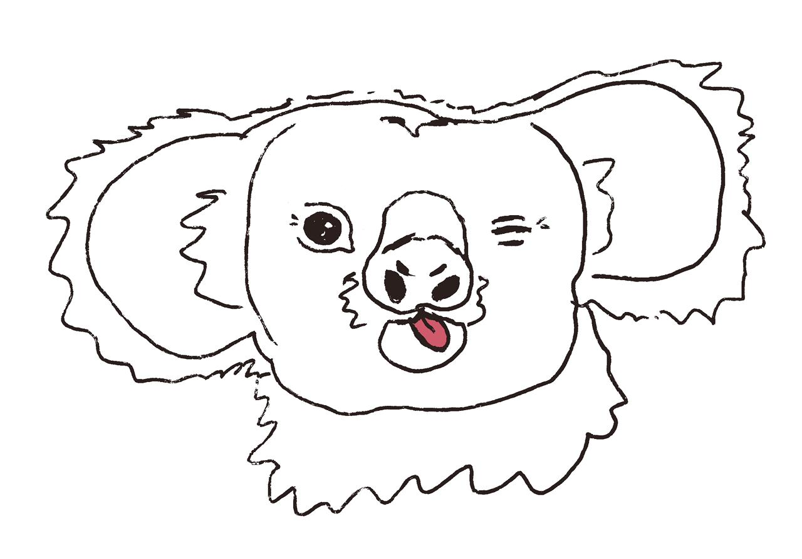
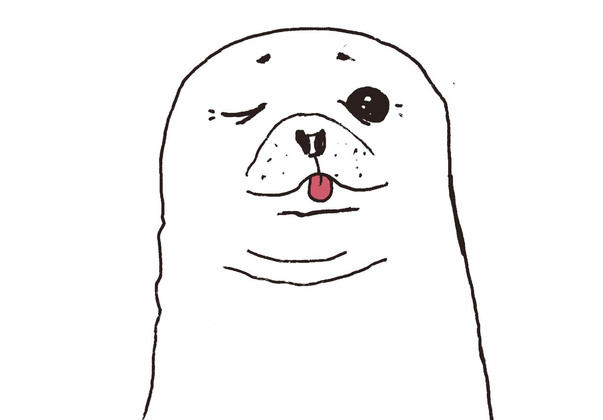